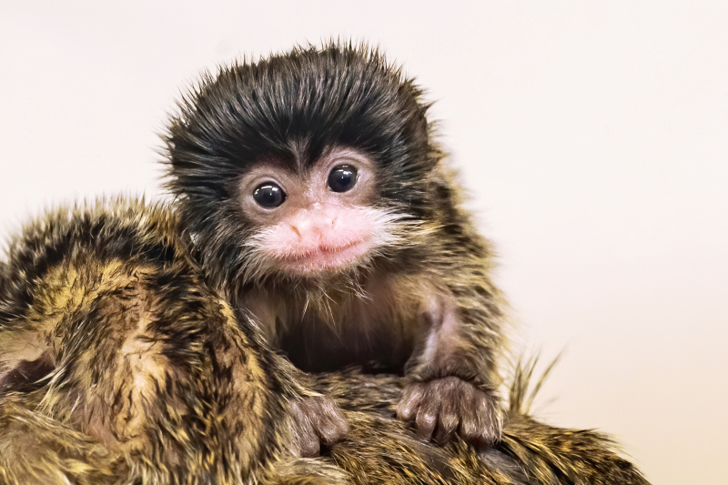

We are excited to have you on our team!
Let's meet the line-up!
Every animal deserves the love and respect that we can provide to them as their caregivers. Let's start by learning their names and personalities!
Bears
Here at The Wild Animal Mini-Zoo, we have two wonderful black bears that you will be working with. The first is Ollie. He is a known to make our caregivers and guests laugh! The second is Mona. Her personality is more reserved, kind, and timid. Do not be shy to her though! She will pounce on any fish that you offer her!
- Ollie
- Mona
Giraffes
The second group that you will have to be confortable with are the giraffes! We are lucky to have a new-comer in our midsts, Frankie! Frankie is only 3-months old, so she requires a little more attention then most. Her mother, Coconut, is in the same enclouser as Frankie, which makes feeding time easy!
- Frankie
- Coconut

Lions
We are not talking about love birds here, but lions. This pair has been together since they have came to the zoo! Mella and Karl, have the exact same feeding schedule mainly because they are never seperated!
- Mella
- Karl

Monkeys
Next up is Cookie, and her adorable infants, Earl and Banana Pudding! Since cookies just had her infants, she is placed in intensive care. This just means more time with the mother and her babies!
- Cookie
- Earl 
- Banana Pudding
Alligators
Lastly, Wren, Aspen, and Mika are the most michevous alligators a zoo could ask for. Michevous, but not harmful! They stay on a strict feeding schedule away from the other alligators because they are known to steal.
- Wren
- Aspen
- Mika